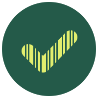
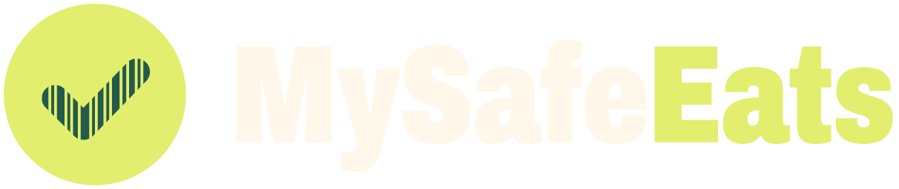
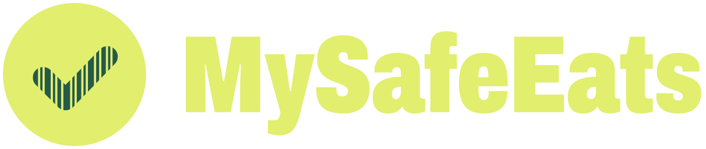
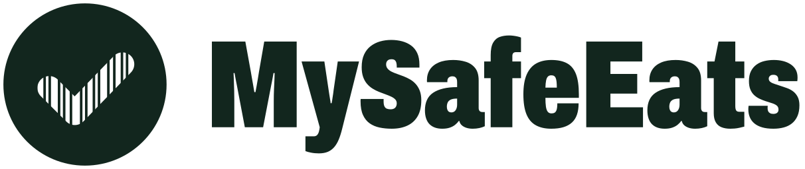
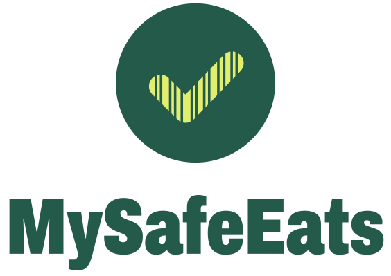
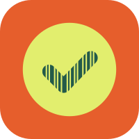
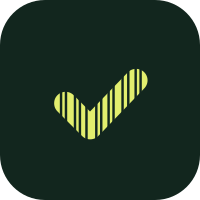
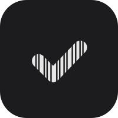

Brand guide · v1.0
Bold about ingredients. Honest about everything else.
How MySafeEats looks, sounds, and shows up: logo, color, type, components, and voice, in one place.

01 · Brand idea
Ingredients first.
MySafeEats helps people with celiac disease shop with confidence by reading what’s actually in the food, not what the package advertises. Everything about the brand follows from that: it should feel energetic and confident (shopping shouldn’t feel clinical), and it should be scrupulously honest (health decisions deserve plain facts).
Bold
Big type, warm orange, confident layouts. We sound sure of what we check.
Clear
One idea per screen. Plain words. Results you can read at a glance.
Grounded
Facts over phrasing. We describe what the app does, never more.
Warm
On your side in the aisle. Friendly, never preachy or alarmist.
02 · Logo
The logo
The Scan Check lockup pairs the mark (a check mark built from barcode bars) with an Archivo Black wordmark at 72% width. On light backgrounds “MySafe” is green and “Eats” is orange. Every file is drawn as vector outlines, so no font needs to be installed.





The mark & app icon
The app icon puts the lime mark on an orange tile, with dark and tinted versions for iOS. At 40 px and below (favicons, settings lists) the bars become a solid check so it stays crisp.



- Barcode bars. Fourteen bars of varied widths, like a UPC: the scan.
- Check mark. The bars only show inside a check: a clear answer about what’s in the food.
Clear space & minimum size
Keep clear space on every side equal to ¼ of the mark’s height. Don’t use the lockup narrower than 120 px on screen (30 mm in print). Below that, use the mark alone; it holds up down to 16 px.
Please don’t
Also avoid the crossed-grain symbol and other certification marks in our graphics. Those belong to their certifying organizations, and MySafeEats is not a certification.
03 · Color
Color
Orange leads, green supports, lime adds the pop. Cream keeps everything warm and readable. Status colors (flag red, check green) are reserved for results and never used decoratively.
#E65E2C · RGB 230 94 44Hero and CTA panels, primary buttons, the app icon tile.
#245A49 · RGB 36 90 73Dark sections, footer, the mark, “MySafe” in the wordmark.
#E2EE6E · RGB 226 238 110The mark’s circle, highlights, “Safe for your list.” A little goes a long way.
#F3E8D2 · RGB 243 232 210Page background. Paper
#FBF7EF for cards and app screens.#12261E · RGB 18 38 30All body text, including text on orange. Light cream
#FFF7EA on dark.#B4400F · RGB 180 64 15Orange headings, links, and labels on light backgrounds.
#B42318 · tint #FCE8E6Only for “Not safe for your list” and matched ingredients.
#245A49 on #E2EE6E“Safe for your list.” Checked ingredients use green on
#E3EDE7.Rough proportions for a typical page. Lime and ink stay as accents.
Accessible pairings (WCAG 2.2)
| Sample | Text on background | Contrast | Use for |
|---|---|---|---|
| Ink on Cream | 13.1:1 | Any text | |
| Ink on Orange | 4.5:1 | Any text (the only text color on orange) | |
| Ink on Lime | 12.6:1 | Any text | |
| Light cream on Green | 7.5:1 | Any text | |
| Lime on Green | 6.3:1 | Any text | |
| Green on Lime | 6.3:1 | Any text (the “safe” result) | |
| Orange Ink on Cream | 4.7:1 | Any text | |
| White on Flag | 6.6:1 | Any text (the “not safe” result) | |
| Flag on Flag tint | 5.6:1 | Any text | |
| White on Orange | 3.5:1 | Large text only (24px+, or 19px+ bold) | |
| Orange on Cream | 2.9:1 | Logo and decoration only, never text | |
| Lime on Orange | 2.8:1 | Logo and decoration only, never text | |
| Green on Orange | 2.3:1 | Decoration only, never text |
04 · Typography
Typography
One free Google Fonts family (SIL Open Font License): Archivo. Its Black weight at 72% width is the wordmark and headline voice; regular widths keep app text and ingredient lists easy to read.
Display · Archivo Black (900), width 72%, tracking −1.5%
Aa Bb 123
The wordmark, headlines, result titles, and stickers. Set tight: line-height 0.9–1.
Text · Archivo Regular–Bold (400–700), width 100%
Aa Bb 123
Body copy, UI, buttons, ingredient lists. Body at 17px / 1.6; never below 14px.
05 · Components
Interface elements
Buttons
Pill-shaped, 48px minimum height. Orange with ink text on light backgrounds; green on orange.
Ingredient chips
Green = built-in gluten list. Orange = your additions. Outline = switched off.
Result states
Always pair color with an icon and words, and scope the title to the person’s list. Never use brand orange for status.
06 · Voice & tone
How we talk
Confident about what the app does, careful about what it doesn’t. The name includes “Safe,” so results are always scoped: “Safe for your list” or “Not safe for your list,” never a bare “safe.” We describe a check against the person’s list, not a verdict on their health.
Say
- “Checks every listed ingredient”
- “Safe for your list” / “Not safe for your list”
- “Flagged” / “Matched your list”
- “Can’t check this one” (no ingredient data)
- “Ingredients first”
- “A shopping aid. Always read the label.”
- “Your list” / “ingredients you avoid”
Avoid
- “Safe to eat,” “guaranteed,” “100% gluten-free”
- “Certified,” “approved,” “doctor-recommended”
- Medical claims (“prevents reactions,” “protects your health”)
- Invented statistics, testimonials, or accuracy rates
- Fear-based language (“toxic,” “poison”)
- Knocking other apps or brands by name
Rewrite
✕ “MySafeEats tells you which foods are safe.”
✓ “MySafeEats checks a product’s ingredient list against your list and shows whether it’s safe for your list.”
Rewrite
✕ “Green means go: 100% gluten-free!”
✓ “Safe for your list: none of your 15 ingredients were found in the ingredient list on record.”
07 · Graphic elements
Graphic elements
Frame key product moments and screenshots.
A cream circle with a green arc behind hero objects.
One per layout, max. Our “Ingredients first” stamp.
Subtle texture on orange, fading out across the panel.
08 · Files
Asset files
logo/mysafeeats-logo.svgPrimary lockup for light backgrounds (also@2x.png)logo/mysafeeats-logo-reverse.svgFor green and dark backgrounds (also@2x.png)logo/mysafeeats-logo-on-orange.svgFor orange backgroundslogo/mysafeeats-logo-mono-ink.svg·mono-cream.svgOne-color versionslogo/mysafeeats-logo-stacked.svgStacked lockup for square spaceslogo/mysafeeats-mark.svg·mark-lime.svgThe mark alone, green or lime circlelogo/mysafeeats-app-icon.svg·-dark·-tintediOS app icon appearanceslogo/mysafeeats-app-icon-1024.pngFull-bleed app icon (stores apply their own corner mask)favicon.svg·apple-touch-icon.pngBrowser and iOS home-screen iconsog-image.png1200×630 social share image